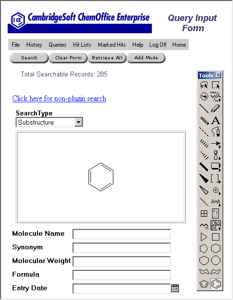

The query input form appears:

Restore Query allows the user to restore previously entered search criteria to an input form.
There are two options when restoring a query:
|
| Download ChemOffice Enterprise User's Guide (PDF) |
| Download ChemOffice Enterprise User's Guide (CHM) |
| CambridgeSoft
Corporation http://www.cambridgesoft.com Voice: (617) 588-9100 Fax: (617) 588-9360 support@cambridgesoft.com |